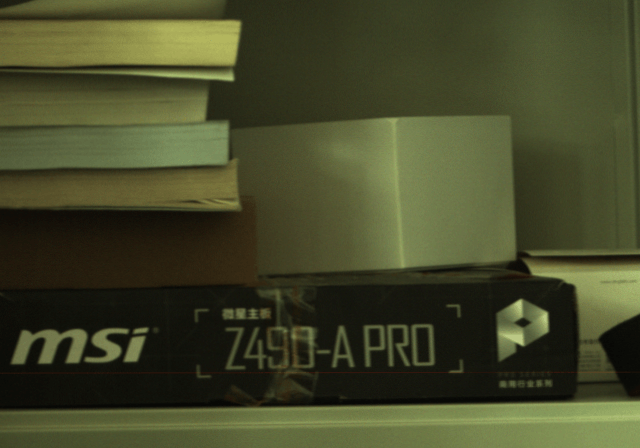

Hyperspectral Image Super Resolution
with Real Unaligned RGB Guidance
Arxiv 2022
- Zeqiang Lai , Ying Fu , Jun Zhang Beijing Institute of Technology
Abstract
Fusion-based hyperspectral image (HSI) super resolution has become increasingly prevalent for its capability to integrate high-frequency spatial information from the paired high-resolution (HR) RGB reference image. However, most of the existing methods either heavily rely on the accurate alignment between low-resolution (LR) HSI and RGB image, or can only deal with simulated unaligned RGB image generated by rigid geometric transformations, which weakens their effectiveness for real scenes. In this paper, we explore the fusion-based HSI super-resolution with real RGB reference images that have both rigid and non-rigid misalignments. To properly address the limitations of existing methods for unaligned reference images, we propose a HSI fusion network with heterogenous feature extractions, multi-stage feature alignments, and attentive feature fusion. Specifically, our network first transforms the input HSI and RGB images into two set of multi-scale features with a HSI encoder and a RGB encoder, respectively. The features of RGB reference images are then processed by a multi-stage alignment module to explicitly align the features of RGB reference with the LR HSI. Finally, the aligned features of RGB reference are further adjusted by an adaptive attention module to focus more on well-aligned and informative regions before sending them to the fusion decoder to generate the reconstructed HR HSI. Additionally, we collect a real-world HSI fusion dataset, consisting of paired HSI and unaligned RGB reference, to support the evaluation of the proposed model for real scenes. Extensive experiments are conducted on both simulated and our real-world datasets, and it shows that our method obtains a clear improvement over existing single-image and fusion-based super-resolution methods on quantitative assessment as well as visual comparison.
HSI Fusion Dataset
We collect a real-world HSI fusion dataset, consisting unaligned high-resolution HSIs captured by a dual-camera system. Each pair of HSIs share the same scene under different viewpoints, and one of them can be selected to synthesize the multispectral image (MSI) or RGB counterpart for HSI fusion with MSI or RGB guidance
Example images (click the image to switch to the reference image). The differences of some image pairs are subtle.
|  | |||

HSI Fusion Network
An overview of our architecture is shown in Figure 2. Our network mainly consists of five components, including an HSI encoder, an RGB encoder, an alignment module, an attention module, and a fusion decoder.
Experimental Results
|
|
|
|
|

|
Citation
@article{lai2022hsirefsr,
title={Hyperspectral Image Super Resolution with Real Unaligned RGB Guidance},
author={Zeqiang Lai, Ying Fu, Jun Zhang},
journal={Arxiv},
year={2022}
}
Acknowledgements
The website template was borrowed from Michaël Gharbi.